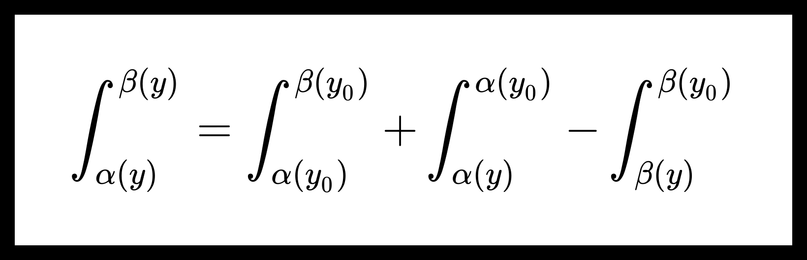

Непрерывность и дифференцируемость собственных интегралов с параметрами, когда пределы интегрирования зависят от параметров.
Непрерывность собственных интегралов с параметрами, когда пределы интегрирования зависят от параметров.
Теорема. О непрерывности собственных интегралов с параметрами, когда пределы интегрирования зависят от параметров.
Пусть дана функция f ( x , y ) : [ a , b ] × [ c , d ] → R f(x, y) : {[a, b] \times [c, d]} \to \mathbb{R} f ( x , y ) : [ a , b ] × [ c , d ] → R α ( y ) , β ( y ) \alpha(y), \beta(y) α ( y ) , β ( y ) [ c , d ] [c, d] [ c , d ] [ a , b ] × [ c , d ] [a, b] \times [c, d] [ a , b ] × [ c , d ]
Функция f ( x , y ) f(x, y) f ( x , y ) [ a , b ] × [ c , d ] [a, b] \times [c, d] [ a , b ] × [ c , d ] α ( y ) , β ( y ) \alpha(y), \beta(y) α ( y ) , β ( y ) [ c , d ] [c, d] [ c , d ]
Тогда функция Φ ( y ) = ∫ α ( y ) β ( y ) f ( x , y ) d x \Phi(y) = \int_{\alpha(y)}^{\beta(y)} f(x, y) dx Φ ( y ) = ∫ α ( y ) β ( y ) f ( x , y ) d x [ c , d ] [c, d] [ c , d ]
Доказательство:
Пусть y 0 ∈ [ c , d ] y_0 \in [c, d] y 0 ∈ [ c , d ] ∃ lim y → y 0 Φ ( y ) = Φ ( y 0 ) \exists \lim_{y \to y_0} \Phi(y) = \Phi(y_0) ∃ lim y → y 0 Φ ( y ) = Φ ( y 0 )
Φ ( y ) = ∫ α ( y 0 ) β ( y 0 ) f ( x , y ) d x + ∫ α ( y ) α ( y 0 ) f ( x , y ) d x − ∫ β ( y ) β ( y 0 ) f ( x , y ) d x . \Phi(y) = \int_{\alpha(y_0)}^{\beta(y_0)} f(x, y) dx + \int_{\alpha(y)}^{\alpha(y_0)} f(x, y) dx - \int_{\beta(y)}^{\beta(y_0)} f(x, y) dx.
Φ ( y ) = ∫ α ( y 0 ) β ( y 0 ) f ( x , y ) d x + ∫ α ( y ) α ( y 0 ) f ( x , y ) d x − ∫ β ( y ) β ( y 0 ) f ( x , y ) d x .
Заметим, что по теореме о непрерывности собственных интегралов с параметрами интеграл ∫ α ( y 0 ) β ( y 0 ) f ( x , y ) d x \int_{\alpha(y_0)}^{\beta(y_0)} f(x, y) dx ∫ α ( y 0 ) β ( y 0 ) f ( x , y ) d x y 0 y_0 y 0
Поэтому для доказательства теоремы, достаточно показать, что интегралы ∫ α ( y ) α ( y 0 ) f ( x , y ) d x \int_{\alpha(y)}^{\alpha(y_0)} f(x, y) dx ∫ α ( y ) α ( y 0 ) f ( x , y ) d x ∫ β ( y ) β ( y 0 ) f ( x , y ) d x \int_{\beta(y)}^{\beta(y_0)} f(x, y) dx ∫ β ( y ) β ( y 0 ) f ( x , y ) d x y y y y 0 y_0 y 0
0 ≤ ∣ ∫ α ( y ) α ( y 0 ) f ( x , y ) d x − ∫ α ( y 0 ) α ( y 0 ) f ( x , y 0 ) d x ⏟ = 0 ∣ = ∣ ∫ α ( y ) α ( y 0 ) f ( x , y ) d x ∣ ≤ 0 \le \left| \int_{\alpha(y)}^{\alpha(y_0)} f(x, y) dx - \underbrace{\int_{\alpha(y_0)}^{\alpha(y_0)} f(x, y_0) dx}_{=0} \right| = \left| \int_{\alpha(y)}^{\alpha(y_0)} f(x, y) dx \right| \le
0 ≤ ∫ α ( y ) α ( y 0 ) f ( x , y ) d x − = 0 ∫ α ( y 0 ) α ( y 0 ) f ( x , y 0 ) d x = ∫ α ( y ) α ( y 0 ) f ( x , y ) d x ≤
∣ ∫ α ( y ) α ( y 0 ) ∣ f ( x , y ) ∣ d x ∣ ≤ ∣ ∫ α ( y ) α ( y 0 ) max ( x , y ) ∈ [ a , b ] × [ c , d ] ∣ f ( x , y ) ∣ d x ∣ = \left| \int_{\alpha(y)}^{\alpha(y_0)} \left| f(x, y) \right| dx \right| \le \left| \int_{\alpha(y)}^{\alpha(y_0)} \max_{(x, y) \in [a, b] \times [c, d]} \left| f(x, y) \right| dx \right| =
∫ α ( y ) α ( y 0 ) ∣ f ( x , y ) ∣ d x ≤ ∫ α ( y ) α ( y 0 ) ( x , y ) ∈ [ a , b ] × [ c , d ] max ∣ f ( x , y ) ∣ d x =
= ∣ α ( y 0 ) − α ( y ) ∣ max ( x , y ) ∈ [ a , b ] × [ c , d ] ∣ f ( x , y ) ∣ ⟶ y → y 0 0. = \left| \alpha(y_0) - \alpha(y) \right| \max_{(x, y) \in [a, b] \times [c, d]} \left| f(x, y) \right| \underset{y \to y_0}{\longrightarrow} 0.
= ∣ α ( y 0 ) − α ( y ) ∣ ( x , y ) ∈ [ a , b ] × [ c , d ] max ∣ f ( x , y ) ∣ y → y 0 ⟶ 0.
Заметим, что по теореме Вейерштрасса максимум достигается, т.к. f ( x , y ) f(x, y) f ( x , y ) [ a , b ] × [ c , d ] [a, b] \times [c, d] [ a , b ] × [ c , d ]
Получим, что функция ∫ α ( y ) α ( y 0 ) f ( x , y ) d x \int_{\alpha(y)}^{\alpha(y_0)} f(x, y) dx ∫ α ( y ) α ( y 0 ) f ( x , y ) d x y 0 y_0 y 0
Для ∫ β ( y ) β ( y 0 ) f ( x , y ) d x \int_{\beta(y)}^{\beta(y_0)} f(x, y) dx ∫ β ( y ) β ( y 0 ) f ( x , y ) d x
Теорема доказана.
Дифференцируемость собственных интегралов с параметрами, когда пределы интегрирования зависят от параметров.
Теорема. О дифференцируемости собственных интегралов с параметрами, когда пределы интегрирования зависят от параметров.
Пусть дана функция f ( x , y ) : [ a , b ] × [ c , d ] → R f(x, y) : {[a, b] \times [c, d]} \to \mathbb{R} f ( x , y ) : [ a , b ] × [ c , d ] → R α ( y ) , β ( y ) \alpha(y), \beta(y) α ( y ) , β ( y ) [ c , d ] [c, d] [ c , d ] [ a , b ] × [ c , d ] [a, b] \times [c, d] [ a , b ] × [ c , d ]
Также пусть выполнено следующее:
f ( x , y ) f(x, y) f ( x , y ) [ a , b ] × [ c , d ] [a, b] \times [c, d] [ a , b ] × [ c , d ]
f y ′ ( x , y ) f^{\prime}_y (x, y) f y ′ ( x , y ) [ a , b ] × [ c , d ] [a, b] \times [c, d] [ a , b ] × [ c , d ]
α ( y ) , β ( y ) \alpha(y), \beta(y) α ( y ) , β ( y ) [ c , d ] [c, d] [ c , d ]
Тогда для Φ ( y ) = ∫ α ( y ) β ( y ) f ( x , y ) d x \Phi(y) = \int_{\alpha(y)}^{\beta(y)} f(x, y) dx Φ ( y ) = ∫ α ( y ) β ( y ) f ( x , y ) d x
∀ y ∈ [ c , d ] ∃ Φ ′ ( y ) = ∫ α ( y ) β ( y ) f y ′ ( x , y ) d x + β ′ ( y ) f ( β ( y ) , y ) − α ′ ( y ) f ( α ( y ) , y ) . \forall y \in [c, d] \ \ \exists \Phi^{\prime} (y) = \int_{\alpha(y)}^{\beta(y)} f^{\prime}_y (x, y) dx + \beta^{\prime}(y) f(\beta(y), y) - \alpha^{\prime}(y) f(\alpha(y), y).
∀ y ∈ [ c , d ] ∃ Φ ′ ( y ) = ∫ α ( y ) β ( y ) f y ′ ( x , y ) d x + β ′ ( y ) f ( β ( y ) , y ) − α ′ ( y ) f ( α ( y ) , y ) .
Доказательство:
Пусть y 0 ∈ [ c , d ] y_0 \in [c, d] y 0 ∈ [ c , d ]
Φ ( y ) = ∫ α ( y 0 ) β ( y 0 ) f ( x , y ) d x + ∫ β ( y 0 ) β ( y ) f ( x , y ) d x − ∫ α ( y 0 ) α ( y ) f ( x , y ) d x . \Phi(y) = \int_{\alpha(y_0)}^{\beta(y_0)} f(x, y) dx + \int_{\beta(y_0)}^{\beta(y)} f(x, y) dx - \int_{\alpha(y_0)}^{\alpha(y)} f(x, y) dx.
Φ ( y ) = ∫ α ( y 0 ) β ( y 0 ) f ( x , y ) d x + ∫ β ( y 0 ) β ( y ) f ( x , y ) d x − ∫ α ( y 0 ) α ( y ) f ( x , y ) d x .
По теореме о дифференцировании собственных интегралов с параметрами
∃ d d y ∫ α ( y 0 ) β ( y 0 ) f ( x , y ) d x ∣ y = y 0 = ∫ α ( y 0 ) β ( y 0 ) f y ′ ( x , y 0 ) d x . \exists \left. \frac{d}{dy} \int_{\alpha(y_0)}^{\beta(y_0)} f(x, y) dx \ \right|_{y=y_0} = \int_{\alpha(y_0)}^{\beta(y_0)} f^{\prime}_y (x, y_0) dx.
∃ d y d ∫ α ( y 0 ) β ( y 0 ) f ( x , y ) d x y = y 0 = ∫ α ( y 0 ) β ( y 0 ) f y ′ ( x , y 0 ) d x .
Поэтому для доказательства теоремы достаточно показать, что
d d y ∫ β ( y 0 ) β ( y ) f ( x , y ) d x ∣ y = y 0 = ? β ′ ( y 0 ) f ( β ( y 0 ) , y 0 ) . \left. \frac{d}{dy} \int_{\beta(y_0)}^{\beta(y)} f(x, y) dx \ \right|_{y=y_0} \overset{?}{=} \beta^{\prime}(y_0) f(\beta(y_0), y_0).
d y d ∫ β ( y 0 ) β ( y ) f ( x , y ) d x y = y 0 = ? β ′ ( y 0 ) f ( β ( y 0 ) , y 0 ) .
Для этого запишем левую часть равенства через предел
lim y → y 0 1 y − y 0 [ ∫ β ( y 0 ) β ( y ) f ( x , y ) d x − ∫ β ( y 0 ) β ( y ) f ( x , y ) d x ⏟ = 0 ] = \lim_{y \to y_0} \frac{1}{y - y_0} \left[ \int_{\beta(y_0)}^{\beta(y)} f(x, y) dx - \underbrace{\int_{\beta(y_0)}^{\beta(y)} f(x, y) dx }_{=0} \right] =
y → y 0 lim y − y 0 1 ∫ β ( y 0 ) β ( y ) f ( x , y ) d x − = 0 ∫ β ( y 0 ) β ( y ) f ( x , y ) d x =
= lim y → y 0 1 y − y 0 ∫ β ( y 0 ) β ( y ) f ( x , y ) d x . (1) = \lim_{y \to y_0} \frac{1}{y - y_0} \int_{\beta(y_0)}^{\beta(y)} f(x, y) dx. \tag{1}
= y → y 0 lim y − y 0 1 ∫ β ( y 0 ) β ( y ) f ( x , y ) d x . ( 1 )
По теореме функция ∫ β ( y 0 ) β ( y ) f ( x , y ) d x \int_{\beta(y_0)}^{\beta(y)} f(x, y) dx ∫ β ( y 0 ) β ( y ) f ( x , y ) d x [ c , d ] [c, d] [ c , d ]
∀ y ∈ [ c , d ] ∃ ξ y ∈ [ min { β ( y ) , β ( y 0 ) } , max { β ( y ) , β ( y 0 ) } ] \forall y \in [c, d] \ \ \exists \xi_y \in [\min \{ \beta(y), \beta(y_0) \}, \max \{ \beta(y), \beta(y_0) \}]
∀ y ∈ [ c , d ] ∃ ξ y ∈ [ min { β ( y ) , β ( y 0 )} , max { β ( y ) , β ( y 0 )}]
∫ β ( y 0 ) β ( y ) f ( x , y ) d x = f ( ξ y , y ) ( β ( y ) − β ( y 0 ) ) . \int_{\beta(y_0)}^{\beta(y)} f(x, y) dx = f(\xi_y, y) (\beta(y) - \beta(y_0)).
∫ β ( y 0 ) β ( y ) f ( x , y ) d x = f ( ξ y , y ) ( β ( y ) − β ( y 0 )) .
Продолжим равенство ( 1 ) (1) ( 1 )
lim y → y 0 1 y − y 0 ∫ β ( y 0 ) β ( y ) f ( x , y ) d x = lim y → y 0 β ( y ) − β ( y 0 ) y − y 0 f ( ξ y , y ) = \lim_{y \to y_0} \frac{1}{y - y_0} \int_{\beta(y_0)}^{\beta(y)} f(x, y) dx = \lim_{y \to y_0} \frac{\beta(y) - \beta(y_0)}{y - y_0} f(\xi_y, y) =
y → y 0 lim y − y 0 1 ∫ β ( y 0 ) β ( y ) f ( x , y ) d x = y → y 0 lim y − y 0 β ( y ) − β ( y 0 ) f ( ξ y , y ) =
= β ′ ( y 0 ) f ( β ( y 0 ) , y 0 ) . = \beta^{\prime}(y_0) f(\beta(y_0), y_0).
= β ′ ( y 0 ) f ( β ( y 0 ) , y 0 ) .
Равенство = ? \overset{?}{=} = ?
Для ∫ α ( y 0 ) α ( y ) f ( x , y ) d x \int_{\alpha(y_0)}^{\alpha(y)} f(x, y) dx ∫ α ( y 0 ) α ( y ) f ( x , y ) d x